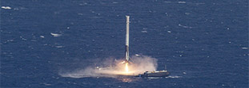
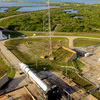
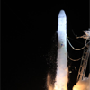

DRONESHIP
LANDING
April 8, 2016 -
SEE MOREFirst successful landing of Falcon 9 first stage on droneship.

SPACE STATION
RESUPPLY
April 8, 2016 -
SEE MOREDragon returns to the Space Station, delivering supplies for the crew.
THE FALCON HAS
LANDED
December 21, 2015 -
SEE MOREFirst successful landing of Falcon 9 first stage on land.
FALCON 9 UPDATES
September 14, 2015
SPACEX SIGNS NEW COMMERCIAL LAUNCH CONTRACTS
Two new orders for Falcon 9 and Falcon Heavy launch vehicles. READ ARTICLE


April 28, 2015
FALCON 9 LAUNCHES SATELLITE FOR THALES ALENIA SPACE
Falcon 9's fifth launch in four months. READ ARTICLE